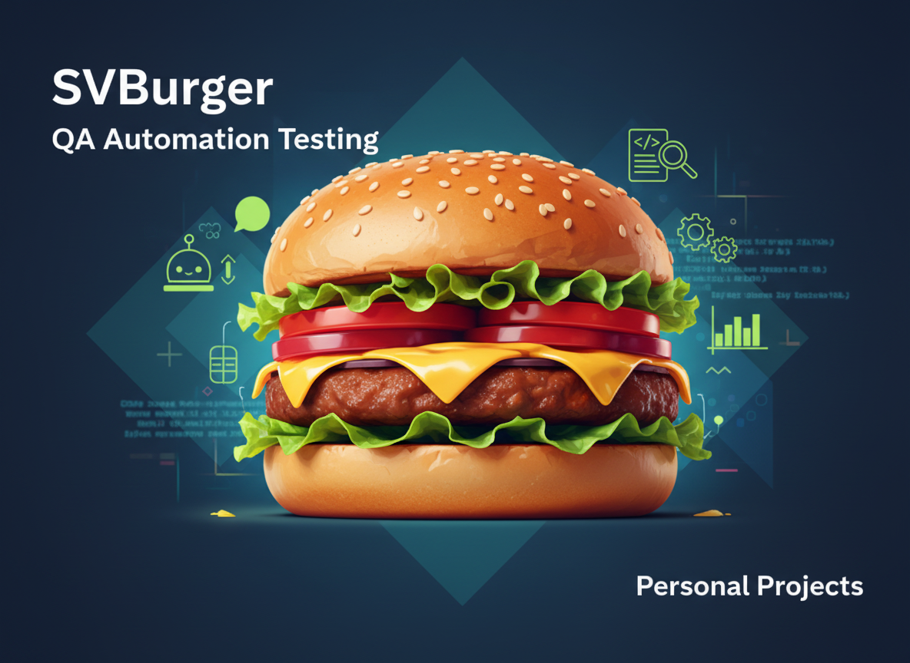

Final QA Project — SVCollege - מכללת לימודי הייטק
End-to-end manual testing project covering functional, regression and exploratory testing on a web application. Includes test plan, test cases, bug reports and a final test summary report.
View on GitHub